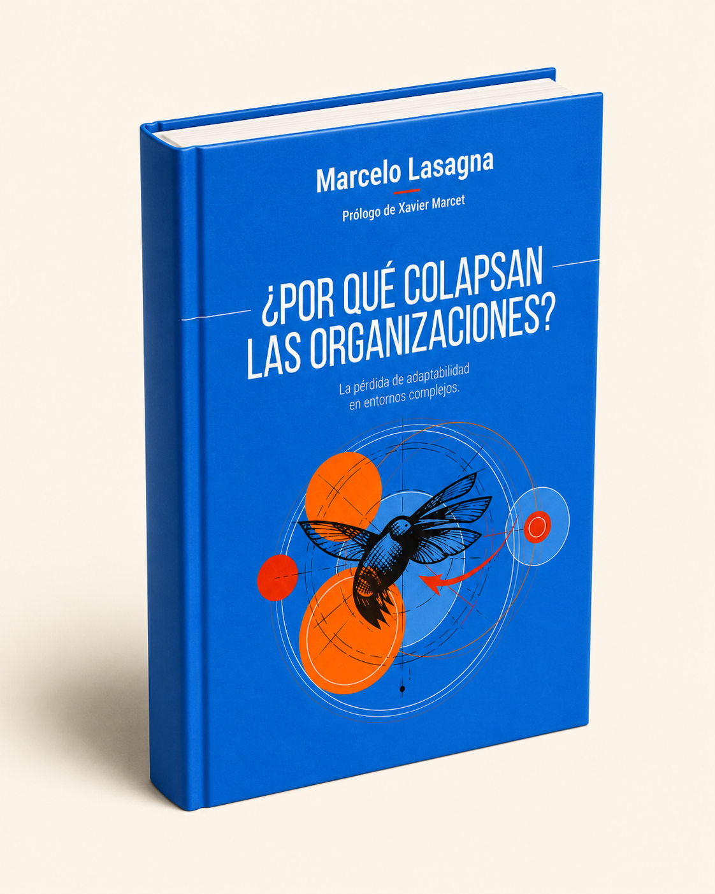
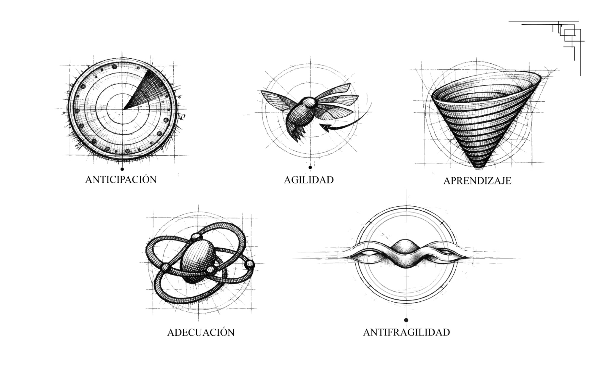

detectan demasiado tarde los cambios,
Nuevo libro de Marcelo Lasagna
La estabilidad es la muerte silenciosa
¿Por qué las organizaciones colapsan aunque todo parezca funcionar?
Un libro sobre complejidad, adaptabilidad e innovación en tiempos donde el entorno cambia más rápido que nuestra capacidad de respuesta.
Marcelo Lasagna
Fundador de Protea Becoming Adaptive

✶Adaptabilidad
✺Complejidad
✦Innovación
△Estrategia
☍Inteligencia orgánica
El problema
Muchas organizaciones no colapsan por falta de estrategia.
Colapsan porque detectan demasiado tarde los cambios, aprenden demasiado lento, coordinan mal la complejidad, y siguen diseñadas para un mundo que ya no existe.
aprenden demasiado lento,
coordinan mal la complejidad,
y siguen diseñadas para un mundo que ya no existe.
Idea central del libro
Las organizaciones no son máquinas.
Son sistemas vivos expuestos a incertidumbre, interdependencia y transformación permanente.
Este libro propone abandonar la lógica de estabilidad y comprender cómo cultivar capacidades adaptativas para sostener vigencia en entornos complejos.
Qué encontrarás en el libro

Complejidad y colapso organizacional
Lectura sistémica del deterioro adaptativo.
Adaptabilidad como ventaja competitiva
Capacidad de respuesta, aprendizaje y evolución.
El error de las organizaciones mecánicas
Cuando la estabilidad impide leer el entorno.
Inteligencia adaptativa
Comprender, orientar, decidir, actuar y evolucionar.
Innovación en contextos inciertos
Innovar cuando el entorno cambia más rápido que la planificación.
Casos reales en Europa y América Latina
Experiencias de transformación pública y privada.
“La adaptabilidad no es una opción. Es la única ventaja sostenible.”
Presentaciones del libro
Próximas presentaciones
2 de julio · 19:00
Conversación sobre complejidad, adaptabilidad y organizaciones.
Lugar por confirmar · Aforo limitado
Reservar plaza →Fecha por confirmar
Presentación y conversación con comunidad, prensa y organizaciones.
Aforo por definir
Inscripción próxima →Fecha por confirmar
Encuentro sobre innovación adaptativa, labs e IAO.
Aforo por definir
Inscripción próxima →Experiencia interactiva
¿Tu organización está entrando en obsolescencia adaptativa?
Hacer el test rápido y descubre tu nivel de riesgo.
Hacer test →Esta sección puede conectarse después con:
- IAO,
- newsletter,
- lead generation,
- workshops,
- consultoría,
- comunidad.
Esta sección puede multiplicar muchísimo la conversión.
Testimonios / apoyos
Máximo 3. Empresarial, académico, institucional.
“Una lectura necesaria para comprender la adaptabilidad organizacional.”
“Una mirada útil para equipos que deben decidir en incertidumbre.”
“El libro conecta complejidad, innovación y gestión con precisión.”
Newsletter / comunidad
El efecto Colibrí
Reflexiones sobre complejidad, adaptabilidad e innovación en tiempos inciertos.